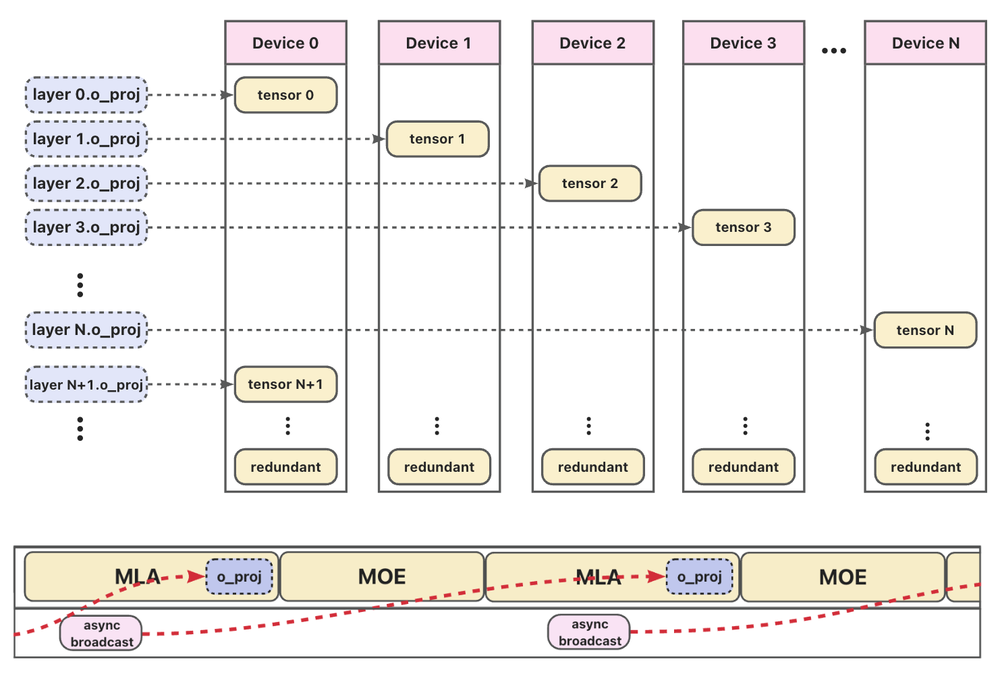

Layer Sharding Linear Guide
Overview
Layer Shard Linear is a memory-optimization feature designed for large language model (LLM) inference. It addresses the high memory pressure caused by repeated linear operators across many layers that share identical structure but have distinct weights.
Instead of replicating all weights on every device, Layer Shard Linear shards the weights of a "series" of such operators across the NPU devices in a communication group:
The i-th layer's linear weight is stored only on device
i % K, whereKis the number of devices in the group.Other devices hold a lightweight shared dummy tensor during initialization and fetch the real weight on-demand via asynchronous broadcast during the forward pass.
As illustrated in the figure below, this design enables broadcast to reach weights: while the current layer (e.g., MLA or MOE) is being computed, the system asynchronously broadcasts the next layer's weight in the background. Because the attention computation in the MLA module is sufficiently latency-bound, the weight transfer for o_proj is fully overlapped with computation, making the communication latency-free from the perspective of end-to-end inference.
This approach preserves exact computational semantics while significantly reducing NPU memory footprint, especially critical for:
Extremely deep architectures (e.g., DeepSeek-V3/R1 with 61 layers);
Models using DSA-CP or FlashComm2, where the full
O(output) projection matrix must reside in memory per layer;Scenarios where attention computation latency fully overlaps (hides) the communication cost of weight broadcasting.
Flowchart

Figure. Layer Shard Linear workflow: weights are sharded by layer across devices (top), and during forward execution (bottom), asynchronous broadcast pre-fetches the next layer's weight while the current layer computes—enabling zero-overhead weight loading.
Getting Started
To enable Layer Shard Linear, specify the target linear layers using the --additional-config argument when launching your inference job. For example, to shard the o_proj and q_b_proj layers, use:
--additional-config '{
"layer_sharding": ["o_proj", "q_b_proj"]
}'
Supported Scenarios
This feature can be enabled in any scenario, but delivers the greatest benefit in the following cases:
FlashComm2-enabled
When using FlashComm2, the full output projection (o_proj) matrix must be resident in memory for each layer. Layer sharding significantly reduces memory pressure by distributing these weights across devices.
Example configuration:
export VLLM_ASCEND_FLASHCOMM2_PARALLEL_SIZE=1
vllm serve \
--model DeepSeek-V3/R1 \
--additional-config '{
"layer_sharding": ["o_proj"]
}'
DSA-CP-enabled
With DSA-CP, both q_b_proj and o_proj layers require large weight matrices to be stored per layer. Sharding these layers across NPUs helps fit extremely deep models (e.g., 61-layer architectures) into limited device memory.
Example configuration:
export VLLM_ASCEND_ENABLE_FLASHCOMM1=1
vllm serve \
--model DeepSeek-V3.2 \
--additional-config '{
"layer_sharding": ["q_b_proj", "o_proj"]
}'